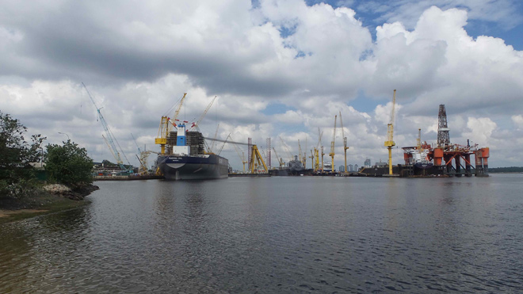
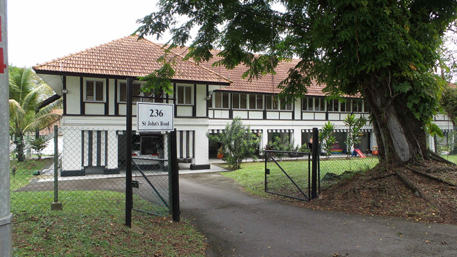
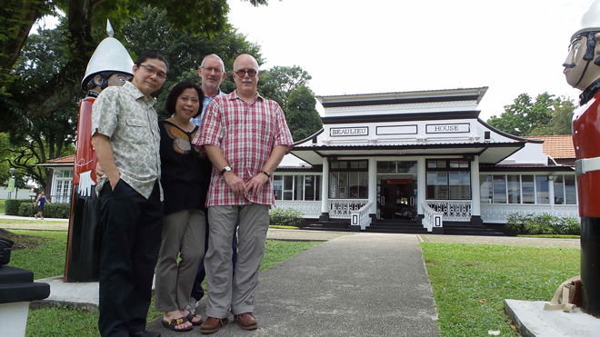
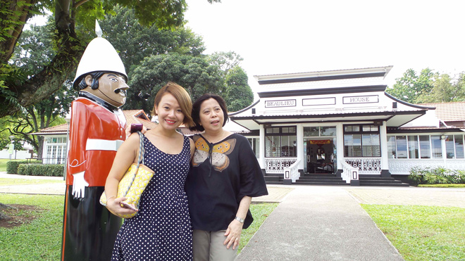
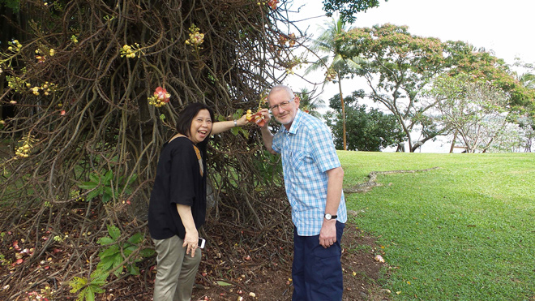
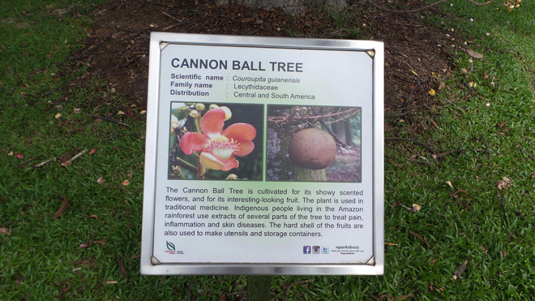
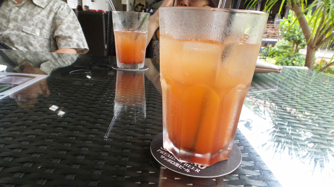

Singapore
When we were living in Singapore (1964-67) my father worked at the British Naval Base. This was given back to Singapore when the British forces withdrew in 1968 and is now known as Sembawang Park. We returned to look over this area - the naval base is now a commercial venture but much of the colonial-style buildings remained. And we cooled off with a delicious glass of chilled plum juice.






